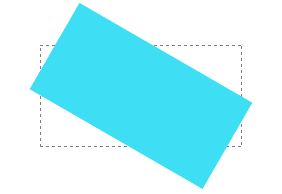
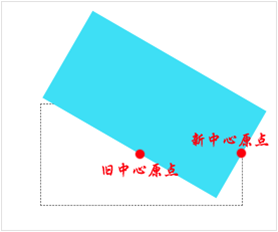

语法：
transform-origin:取值
说明：
transform-origin改变元素变形时的中心原点位置
transform-origin属性取值有2种：一种是采用长度值，另外一种是使用关键字。长度值一般使用百分比作为单位，很少使用px、em等作为单位。
| 关键字 | 百分比 | 说明 |
|---|---|---|
| top left | 0 0 | 左上 |
| top center | 50% 0 | 靠上居中 |
| top right | 100% 0 | 右上 |
| left center | 0 50% | 靠左居中 |
| center center | 50% 50% | 正中 |
| right center | 100% 50% | 靠右居中 |
| bottom left | 0 100% | 左下 |
| bottom center | 50% 100% | 靠下居中 |
| bottom right | 100% 100% | 右下 |
使用方法：
transform-origin:right center; /*元素的中心位置为 “靠右居中”*/
兼容性：
- 浅绿 = 支持
- 红色 = 不支持
- 粉色 = 部分支持
| 支持版本\类型 | IE | Firefox | Safari | Chrome | Opera |
|---|---|---|---|---|---|
| 版本 | 6-8 | 4-18 | 5.1.7 | 13-23 | 11.5-12.5 |
| 版本 | 9-10 |
ie9 以上，和高版本浏览器。不过transform都要加上对应的前缀，-o,-moz,-webkit,-ms
Internet Explorer 10、Firefox、Opera 支持 transform 属性。
Internet Explorer 9 支持替代的 -ms-transform 属性（仅适用于 2D 转换）。
Safari 和 Chrome 支持替代的 -webkit-transform 属性（3D 和 2D 转换）。
Opera 只支持 2D 转换。
事例：
skewX(x)
div{
width:200px;
height:100px;
color:white;
background-color: #3EDFF4;
text-align:center;
transform-origin:right center;
-webkit-transform-origin:right center;/*兼容-webkit-引擎浏览器*/
-moz-transform-origin:right center; /*兼容-moz-引擎浏览器*/
transform:rotate(30deg);
-webkit-transform:rotate(30deg); /*兼容-webkit-引擎浏览器*/
-moz-transform:rotate(30deg); /*兼容-moz-引擎浏览器*/
}
